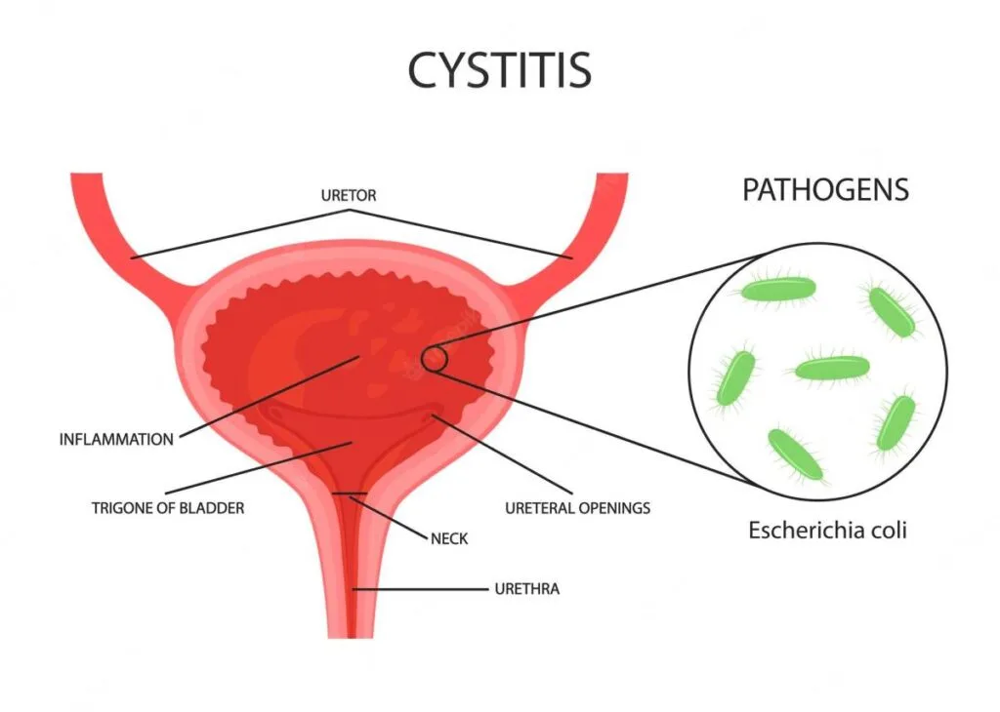

Expanded Nursing Uganda Explanation
Cystitis should be understood beyond a short definition. Link the concept to patient history, focused assessment, common risks, nursing priorities, documentation and evaluation of outcomes.
01 Overview
Cystitis literally means "inflammation of the bladder." In clinical practice, it almost invariably refers to inflammation of the bladder lining, most commonly caused by a bacterial infection of the lower urinary tract. This makes it a subset of what is broadly termed a "Urinary Tract Infection" (UTI).
- Infection: Predominantly bacterial, but can be non-bacterial (e.g., chemical, interstitial, radiation-induced). For the vast majority of cases we discuss, assume bacterial unless specified.
- Location: Primarily affects the bladder. If the infection ascends to the kidneys, it becomes pyelonephritis.
- Symptoms: Characterized by a constellation of irritating urinary symptoms (dysuria, frequency, urgency, suprapubic pain).
Understanding the different classifications is crucial for guiding diagnosis, treatment, and prognosis.
A sudden onset, usually short-lived inflammation of the bladder, typically caused by bacterial infection.
- Key Features: Rapid onset of symptoms.
- Symptoms are usually severe.
- Responds well to short courses of antibiotics.
- Resolves without permanent damage in most cases.
- Example: A young, healthy woman experiencing her first episode of dysuria and frequency that started yesterday.
Persistent or recurrent inflammation of the bladder. This can be due to:
- Recurrent Acute Infections: Multiple acute episodes over a period (e.g., ≥ 2 episodes in 6 months or ≥ 3 episodes in 12 months). The infection clears between episodes.
- Persistent Infection: The same infection is never fully eradicated.
- Non-infectious Chronic Inflammation: Examples include interstitial cystitis, radiation cystitis, or chemical cystitis.
- Key Features: Symptoms may be less severe but persistent or frequently recurring.
- Often requires a more thorough investigation to identify underlying causes or predisposing factors.
- Management can be more challenging and may involve longer-term strategies or non-antibiotic approaches.
- Example: A postmenopausal woman who experiences UTIs every 2-3 months, or a patient with interstitial cystitis experiencing chronic bladder pain and urgency for years.
This is perhaps the most clinically relevant classification, as it dictates the aggressiveness of investigation and treatment.
Acute bacterial cystitis occurring in a healthy, non-pregnant, premenopausal woman with a structurally and functionally normal urinary tract, and no relevant comorbidities.
- Key Features: No underlying conditions that would increase the risk of treatment failure or serious complications.
- Diagnosis is often clinical, and a urine culture may not be necessary.
- Typically responds to short-course oral antibiotics.
- Good prognosis.
- Exclusions: Any factor that makes a UTI "complicated" (see below) means it's not uncomplicated.
Cystitis occurring in individuals who have factors that compromise the host's defense mechanisms, increase the risk of treatment failure, or predispose them to more severe infection or complications.
- Anatomical or Functional Abnormalities of the Urinary Tract: Urinary obstruction: (e.g., strictures, stones, prostatic hypertrophy).
- Urinary retention: (e.g., neurogenic bladder).
- Vesicoureteral reflux.
- Renal or bladder calculi.
- Congenital anomalies of the urinary tract.
- Urinary catheters or other foreign bodies.
- Instrumentation of the urinary tract.
- Host Factors/Comorbidities: Men: All UTIs in men are generally considered complicated until proven otherwise due to the longer urethra and usually underlying prostate issues or other structural abnormalities.
- Pregnant women: Hormonal changes and mechanical pressure increase risk and potential for complications (e.g., preterm labor).
- Diabetics: Impaired immune response, neurogenic bladder.
- Immunocompromised patients: HIV/AIDS, organ transplant recipients, chemotherapy patients.
- Elderly patients: Often have comorbidities, impaired immunity, structural changes (e.g., prostatic hypertrophy in men, prolapse in women), and atypical presentations.
- Children: Higher risk of anatomical abnormalities and renal scarring.
- Renal insufficiency/failure.
- Recent hospitalization or antibiotic use.
- Higher risk of treatment failure, recurrence, and progression to pyelonephritis or sepsis.
- Requires more thorough diagnostic workup (e.g., urine culture always indicated, imaging often needed).
- Often requires broader-spectrum antibiotics, longer duration of treatment, and sometimes intravenous antibiotics.
- May require intervention for the underlying complicating factor.
These are often chronic or have distinct etiologies.
- Interstitial Cystitis (IC) / Bladder Pain Syndrome (BPS): A chronic, debilitating bladder condition characterized by unpleasant sensations (pain, pressure, discomfort) perceived to be related to the bladder, accompanied by at least one urinary symptom (e.g., urgency, frequency), in the absence of infection or other identifiable causes. Key Features: Diagnosis of exclusion.
- No identifiable pathogen.
- Often associated with bladder wall changes (e.g., Hunner's lesions, mast cell infiltration).
- Significant impact on quality of life.
- Management is complex and multi-modal.
- Hemorrhagic Cystitis: Inflammation of the bladder characterized by gross hematuria (blood in urine). Causes: Chemotherapy agents: Cyclophosphamide and ifosfamide are common culprits (acrolein metabolite).
- Radiation therapy to the pelvic area.
- Viral infections: Adenovirus.
- Severe bacterial UTIs.
- Foreign bodies (e.g., indwelling catheters).
- Key Features: Can be severe, leading to significant blood loss and clots.
- Requires specific management depending on the cause (e.g., mesna for cyclophosphamide-induced, bladder irrigation).
- Radiation Cystitis: Inflammation and damage to the bladder lining and wall as a result of radiation therapy to the pelvis (e.g., for prostate, cervical, or rectal cancer). Key Features: Can occur acutely during or shortly after radiation, or chronically years later.
- Symptoms include urgency, frequency, dysuria, and hematuria (can be severe and persistent).
- Management is challenging, often involves symptomatic relief, hyperbaric oxygen therapy, or surgical interventions in severe cases.
- Chemical Cystitis: Bladder inflammation caused by irritant chemicals introduced into the bladder. Causes: Exposure to certain chemicals (e.g., some spermicides).
- Intravesical instillations for bladder cancer treatment (e.g., BCG, mitomycin).
- Key Features: Symptoms similar to bacterial cystitis but no infection.
- Eosinophilic Cystitis: A rare form of chronic cystitis characterized by the infiltration of eosinophils into the bladder wall. Association: Often associated with allergies, asthma, or other eosinophilic disorders.
Understanding risk factors is crucial for prevention and for identifying individuals who may be at higher risk for complicated infections.
- Anatomical Proximity: The short distance between the urethra, vagina, and anus facilitates bacterial migration.
- Urethral Length: Shorter urethra in females compared to males allows easier access for bacteria to the bladder.
- Sexual Activity: Intercourse: Introduces bacteria into the urethra. Increased frequency and certain practices can heighten risk.
- Spermicide Use: Can alter vaginal flora, reducing protective lactobacilli and promoting uropathogen colonization.
- Diaphragm Use: Can exert pressure on the urethra, leading to incomplete bladder emptying.
- Estrogen Deficiency (Postmenopausal Women): Leads to vaginal atrophy, thinning of the urethral and vaginal epithelium.
- Reduced lactobacilli in the vaginal flora, increasing vaginal pH and colonization by uropathogens (e.g., E. coli).
- Pelvic organ prolapse (cystocele, rectocele) can cause incomplete bladder emptying.
- Pregnancy: Hormonal changes (progesterone causing smooth muscle relaxation and urinary stasis) and mechanical compression of the ureters and bladder by the gravid uterus can increase risk of UTIs and progression to pyelonephritis.
- Benign Prostatic Hyperplasia (BPH): Enlarged prostate can obstruct urine flow, leading to urinary stasis and incomplete bladder emptying, creating a breeding ground for bacteria.
- Prostatitis: Inflammation of the prostate can lead to recurrent UTIs.
- Other Urological Conditions: Strictures, stones, congenital abnormalities.
- Instrumentation: Catheterization is a significant risk factor.
- Urinary Stasis/Incomplete Bladder Emptying: Neurogenic Bladder: Conditions like spinal cord injury, multiple sclerosis, or diabetes can impair bladder nerve function, leading to retention.
- Obstruction: Urethral strictures, bladder stones, tumors.
- Voluntary Bladder Holding: Suppressing the urge to urinate for prolonged periods can increase risk.
- Urinary Tract Instrumentation/Foreign Bodies: Urinary Catheters: Most significant risk factor for nosocomial (hospital-acquired) UTIs. Catheters provide a direct pathway for bacteria and disrupt natural defenses.
- Cystoscopy, Urethral Stents.
- Compromised Immune System: Diabetes Mellitus: Impaired immune response, neuropathy leading to neurogenic bladder, and glycosuria (sugar in urine provides a medium for bacterial growth).
- HIV/AIDS.
- Immunosuppressive Medications: Chemotherapy, corticosteroids.
- Chronic Kidney Disease.
- Structural Abnormalities of the Urinary Tract: Vesicoureteral Reflux (VUR): Backward flow of urine from the bladder to the ureters/kidneys, often congenital, especially important in children.
- Duplex Collecting System, Ureterocele.
- Genetics/Family History: Some individuals may have a genetic predisposition to recurrent UTIs (e.g., due to differences in uroepithelial cell receptor expression).
- Poor Personal Hygiene: Less direct, but can contribute to increased periurethral bacterial colonization.
- Inadequate Fluid Intake/Dehydration: May reduce the flushing action of urination.
Micturition (urination) is a complex process involving both involuntary reflexes and voluntary control.
- As the bladder fills, stretch receptors in the bladder wall are activated.
- Afferent nerves send signals to the sacral spinal cord (S2-S4) and ascend to the pontine micturition center (PMC) in the brainstem and cerebral cortex.
- Sympathetic stimulation (T11-L2): Relaxes the detrusor muscle (beta-3 receptors) and contracts the internal urethral sphincter (alpha-1 receptors), promoting urine storage.
- Somatic stimulation: The pudendal nerve maintains contraction of the external urethral sphincter (voluntary).
- The brain perceives the urge to void but inhibits the reflex until a socially appropriate time.
- When micturition is desired, the cerebral cortex sends signals to the PMC.
- The PMC inhibits sympathetic and pudendal nerve activity and activates parasympathetic activity.
- Parasympathetic stimulation (S2-S4): Releases acetylcholine, which acts on muscarinic M3 receptors in the detrusor muscle, causing it to contract forcefully.
- Inhibition of sympathetic and pudendal nerves: Causes relaxation of both the internal and external urethral sphincters.
- Urine is expelled.
The urinary tract has several inherent mechanisms to prevent and fight off bacterial invasion. When these mechanisms are compromised, the risk of cystitis increases.
- Mechanical Flushing: Urine Flow: The regular, complete emptying of the bladder physically flushes out bacteria that have entered the urethra. This is the most important defense mechanism.
- Urine Turbulence: Turbulent flow within the bladder also helps prevent bacterial adherence.
- Urine Properties: Low pH (acidity): Most bacteria, including common uropathogens, prefer a neutral to alkaline environment. Acidic urine is bactericidal or bacteriostatic.
- High Urea Concentration: Urea can be bactericidal.
- High Osmolality: Can be inhibitory to bacterial growth.
- Anatomical Barriers: Urethral Length (in males): Longer urethra in men provides a greater distance for bacteria to travel to reach the bladder.
- Ureteral Peristalsis: Rhythmic contractions of the ureters propel urine downwards, preventing reflux of urine (and bacteria) from the bladder to the kidneys.
- Ureterovesical Junction: An oblique entry of the ureters into the bladder, forming a flap-valve mechanism, which prevents vesicoureteral reflux during bladder contraction.
- Mucosal Defenses: Transitional Epithelium (Urothelium): Forms a tight barrier preventing bacterial penetration.
- Glycosaminoglycan (GAG) Layer: A protective mucin layer coating the urothelium, which is rich in mucopolysaccharides. This layer acts as a non-specific anti-adherence factor, preventing bacteria from attaching to the bladder wall. Damage to this layer can increase susceptibility.
- Tamm-Horsfall Protein (Uromodulin): A glycoprotein produced by kidney tubules and secreted into the urine. It can bind to bacterial fimbriae (especially E. coli), preventing their adherence to urothelial cells and facilitating their excretion.
- Secretory IgA: Local antibody production in the urinary tract.
- Antimicrobial Peptides: Cathelicidins and defensins produced by urothelial cells.
- Exfoliation of Urothelial Cells: Infected cells can be shed, carrying bacteria with them.
- Immune Response: Phagocytes: Macrophages and neutrophils can be recruited to the site of infection.
- Inflammatory Response: Local inflammation helps to contain and eliminate pathogens.
The vast majority of cystitis cases are bacterial.
- Most Common: Accounts for 75-95% of uncomplicated cystitis cases.
- Source: Normal flora of the human gastrointestinal tract (fecal contamination).
- Key Virulence Factors: P-fimbriae (Pili): Adhere to specific glycolipid receptors (Gal-Gal disaccharide) on urothelial cells, particularly prevalent in the renal pelvis but also found in the bladder. Important for ascending infection and pyelonephritis.
- Type 1 fimbriae (FimH adhesin): Adhere to mannose-containing glycoproteins on bladder epithelial cells. Crucial for bladder colonization and formation of intracellular bacterial communities (IBCs).
- Hemolysin: Damages host cell membranes, releases iron, contributes to tissue invasion.
- Cytotoxic Necrotizing Factor 1 (CNF1): Induces cytoskeletal rearrangements, facilitating bacterial invasion.
- Capsular Polysaccharide (K antigen): Inhibits phagocytosis.
- Iron Acquisition Systems: Siderophores allow bacteria to scavenge iron from the host.
- Klebsiella pneumoniae: Often associated with complicated UTIs, catheter-associated UTIs (CAUTIs), and hospital-acquired infections. Can produce extended-spectrum beta-lactamases (ESBLs).
- Proteus mirabilis: Notably produces urease , an enzyme that hydrolyzes urea into ammonia and carbon dioxide. This raises urine pH, making it more alkaline, which facilitates the formation of struvite stones (magnesium ammonium phosphate) . These stones can act as reservoirs for bacteria, leading to recurrent infections. Also motile and can ascend the urinary tract.
- Pseudomonas aeruginosa: Typically found in complicated UTIs, especially those associated with catheters, instrumentation, or immunocompromised hosts. Often multi-drug resistant.
- Enterobacter species.
- Staphylococcus saprophyticus: A significant cause of UTIs (5-15%) in young, sexually active women, second only to E. coli in this demographic.
- Enterococcus faecalis: Commonly seen in complicated UTIs, hospital-acquired infections, and those with underlying urological abnormalities. Can be difficult to treat due to intrinsic and acquired antibiotic resistance.
- Group B Streptococcus (Streptococcus agalactiae): Can cause UTIs, particularly in pregnant women, where it has implications for neonatal sepsis.
- Fungal: Primarily Candida albicans . Most common in immunocompromised individuals, those with indwelling catheters, or prolonged antibiotic use (which alters normal flora). Often associated with complicated UTIs.
- Viral: Less common cause of cystitis. Adenovirus can cause hemorrhagic cystitis, particularly in children and immunocompromised patients.
- Ascending Infection (Most Common and Primary Route for Cystitis): Bacteria, typically from the fecal flora, colonize the periurethral area.
- They then ascend the urethra into the bladder.
- Factors facilitating this: short female urethra, sexual intercourse, lack of normal vaginal flora (lactobacilli).
- Hematogenous Spread (Rare for Cystitis): Bacteria from a distant infection (e.g., endocarditis, sepsis) travel through the bloodstream and seed the kidneys first, then potentially descend to the bladder.
- More typical for infections of the kidney parenchyma (pyelonephritis) than for primary cystitis.
- Organisms involved are often different from typical uropathogens (e.g., Staphylococcus aureus ).
- Lymphatic Spread (Uncommon/Debatable): Theoretically, bacteria could spread from adjacent infected organs (e.g., bowel) via lymphatic channels to the bladder, but this is not considered a major route.
The symptoms of cystitis arise directly from the inflammatory response and irritation of the bladder and urethra. While symptoms can vary in intensity, a classic cluster often presents.
These are the symptoms of uncomplicated cystitis and involve irritation of the bladder and urethra.
- Dysuria: Description: Pain, burning, or discomfort during urination. This is often the most prominent and distressing symptom.
- Mechanism: Inflammation of the urethral and bladder mucosa, and activation of pain receptors by inflammatory mediators during the passage of urine.
- Character: Can range from mild discomfort to severe burning. Often described as occurring "internally" at the end of urination when the bladder contracts.
- Frequency: Description: An abnormally increased number of voiding episodes during the day and/or night (nocturia).
- Mechanism: Bladder irritation and inflammation lead to increased sensitivity of stretch receptors. The bladder wall becomes less compliant and more irritable, perceiving fullness even with small volumes of urine. Detrusor muscle spasms also contribute.
- Distinction: Important to differentiate from polyuria (increased total urine volume), which is not typical for uncomplicated cystitis.
- Urgency: Description: A sudden, compelling desire to pass urine, which is difficult to defer. It can feel like the bladder "cannot hold it."
- Mechanism: Similar to frequency, it results from heightened bladder wall sensitivity and detrusor overactivity due to inflammation.
- Associated symptom: Can be associated with urge incontinence if the patient cannot reach a toilet in time.
- Suprapubic Pain (or Discomfort): Description: Pain or pressure located in the lower abdomen, directly above the pubic bone.
- Mechanism: Inflammation and spasm of the detrusor muscle, as well as general peritoneal irritation from the inflamed bladder.
- Character: Can range from a dull ache to sharp pain, often exacerbated by bladder filling and relieved by emptying.
- Hematuria (Gross or Microscopic): Description: Presence of blood in the urine. Microscopic hematuria: Blood visible only under a microscope. Very common in cystitis.
- Gross hematuria: Blood visible to the naked eye, making the urine appear pink, red, or cola-colored. Less common but can occur, especially in severe inflammation or specific types like hemorrhagic cystitis.
- Mechanism: Inflammation and damage to the urothelial lining and capillaries, leading to extravasation of red blood cells into the urine.
- Cloudy Urine: Due to the presence of white blood cells (pyuria), bacteria, and epithelial cells.
- Foul-Smelling Urine: Can be a subjective finding, sometimes related to bacterial metabolism (e.g., ammonia from Proteus).
- Malaise/Fatigue: General feeling of unwellness.
- Low-grade Fever: May be present, but high fever (>38°C or 100.4°F), chills, and rigors suggest upper urinary tract infection (pyelonephritis) or systemic infection.
- Nausea/Vomiting: More indicative of pyelonephritis, but mild nausea can occur with severe cystitis.
It's crucial to recognize that the classic symptoms may be absent or masked in certain populations.
- Often Atypical: May not present with classic dysuria, frequency, or urgency.
- Non-specific Symptoms: Change in mental status: Confusion, delirium, disorientation (can be the only symptom).
- Generalized weakness or falls.
- Anorexia, malaise, or decreased appetite.
- Incontinence (new onset or worsening).
- Abdominal pain (not necessarily suprapubic).
- Failure to thrive (in very frail elderly).
- Reasons for Atypia: Altered immune response, reduced pain perception, inability to clearly articulate symptoms, and high baseline prevalence of other conditions.
- Non-specific and Vague Symptoms: Especially challenging to diagnose.
- Infants: Fever of unknown origin (FUO).
- Irritability.
- Poor feeding, vomiting, diarrhea.
- Failure to thrive.
- Foul-smelling urine or cloudy urine (diaper changes).
- Older Children: Fever (may be higher than adults).
- Abdominal pain.
- Enuresis (new onset bedwetting) or daytime incontinence.
- Irritability or lethargy.
- May start to verbalize classic symptoms like dysuria, frequency, urgency.
- Importance: UTIs in children, particularly young children, require prompt diagnosis and treatment due to the risk of renal scarring and long-term kidney damage, especially if associated with vesicoureteral reflux.
It's important to consider other conditions that can mimic cystitis symptoms.
- Urethritis: Symptoms: Primarily dysuria and urgency, but usually without frequency or suprapubic pain. Discharge may be present.
- Causes: Often sexually transmitted infections (STIs) like Chlamydia trachomatis or Neisseria gonorrhoeae , or sometimes chemical irritation.
- Key Distinction: Lack of significant pyuria on urinalysis (if not STI-related) and absence of bladder-specific symptoms.
- Vaginitis: Symptoms: Vaginal itching, burning, discharge, dyspareunia (painful intercourse). Dysuria may be present, but often described as "external" or "splash" dysuria (irritation of the inflamed labia/vulva by urine) rather than internal bladder pain.
- Causes: Fungal (e.g., Candida), bacterial vaginosis, trichomoniasis.
- Key Distinction: Presence of vaginal symptoms, normal urinalysis (no significant pyuria/bacteriuria), and physical exam findings.
- Pyelonephritis (Upper Urinary Tract Infection): Symptoms: Shares some symptoms with cystitis (dysuria, frequency, urgency), but crucially includes systemic signs of infection : High fever (>38°C or 100.4°F), chills, rigors.
- Flank pain (costovertebral angle tenderness).
- Nausea, vomiting, severe malaise.
- Key Distinction: Presence of systemic illness and flank pain indicates kidney involvement.
- Sexually Transmitted Infections (STIs): Symptoms: Can cause dysuria, urethral discharge, genital lesions, pelvic pain.
- Examples: Gonorrhea, Chlamydia, Herpes Simplex Virus.
- Key Distinction: Presence of genital symptoms, sexual history, and specific diagnostic tests.
- Overactive Bladder (OAB): Symptoms: Urgency (with or without incontinence), frequency, nocturia, without infection.
- Key Distinction: Absence of dysuria, suprapubic pain, and negative urine culture.
- Interstitial Cystitis/Bladder Pain Syndrome: Symptoms: Chronic pelvic pain, urgency, frequency, often exacerbated by bladder filling.
- Key Distinction: Chronic nature, pain without infection, negative urine culture, often associated with specific triggers.
- Other Causes of Pelvic Pain: Appendicitis, diverticulitis, pelvic inflammatory disease, endometriosis (especially in women).
The diagnosis of cystitis typically involves a combination of clinical assessment, urinalysis, and urine culture. The extent of the workup depends on the patient's presentation (uncomplicated vs. complicated), demographics (age, sex), and recurrence patterns.
- Symptom Review: Detailed inquiry about the presence, onset, duration, and severity of classic cystitis symptoms (dysuria, frequency, urgency, suprapubic pain, hematuria).
- Associated Symptoms: Ask about fever, chills, flank pain, nausea, vomiting (to rule out pyelonephritis).
- Risk Factors: Inquire about relevant risk factors (e.g., sexual activity, spermicide use, history of UTIs, pregnancy, diabetes, catheterization, prostate issues, postmenopausal status).
- Past Medical History: Prior UTIs, kidney stones, diabetes, neurological conditions, immunosuppression.
- Medications: Recent antibiotic use, immunosuppressants.
- Allergies: Especially to antibiotics.
- Uncomplicated Cystitis: Often a limited exam is sufficient. General Appearance: Usually well-appearing, no signs of systemic toxicity.
- Abdominal Palpation: May reveal mild suprapubic tenderness.
- Temperature: Normal or low-grade fever.
- Complicated Cystitis or Suspected Pyelonephritis: A more thorough exam is warranted. Vital Signs: Assess for fever, tachycardia, hypotension (suggesting sepsis).
02 Nursing Uganda Clinical Lens
Use Cystitis as a practical nursing topic, not only a memorized definition. Start with normal structure and function, then connect it to assessment findings and disease.
- What to understand first: define cystitis, identify the normal or expected pattern, then explain what changes when the patient is unwell.
- Why it matters in care: the nurse must recognize risk early, explain findings clearly, document accurately and know when to escalate.
- How to revise it: connect each point to assessment, nursing diagnosis or care problem, intervention, rationale and evaluation.
03 Assessment Guide
- Relevant inspection, palpation, movement, auscultation, vital signs or neurological checks.
- Normal findings, abnormal findings and what each abnormality may indicate.
- Patient history, risk factors and how the body system affects other systems.
04 Nursing Priorities, Rationales and Outcomes
- Use anatomy to explain symptoms and guide focused assessment.
- Recognize findings that need urgent escalation.
- Teach the patient using simple body-system language.
The rationale for these priorities is patient safety: nursing actions should prevent deterioration, reduce discomfort, support recovery and create clear evidence for the next caregiver.
- Expected outcome: The learner can explain normal function, identify abnormal signs and connect them to nursing action.
05 Patient Teaching and Revision Check
- Explain cystitis in simple language the patient or caregiver can repeat back.
- Teach warning signs, medicine or follow-up instructions, hygiene or lifestyle points where relevant.
- For exams, prepare a short answer using: definition, causes or risk factors, signs, assessment, management, complications and prevention.
- For ward practice, document baseline findings, actions taken, patient response and the plan for review.
Illustrations and Diagrams (5)



Related Video Lectures
Watch nursing lecture videos on YouTube for this topic. Opens in a new tab.
Watch on YouTubeExternal link: YouTube may use its own cookies and terms. Nursing Uganda is not affiliated with YouTube.